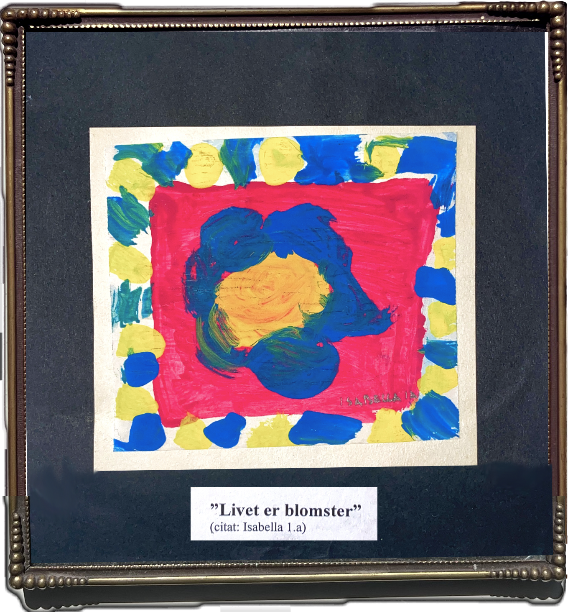

paint on paper, 2004
My works moves across art, design, and engineering, often returning to femininity, nature, solitude, and transformation. I like to think that life is flowers, from seven-year-old me, still sits somewhere in that way of seeing - personal, observant, and somewhat open-ended.
Images, videos, code and web design are by me, unless otherwise stated.
CV_
isabella vildenfeldt
b. 1997
denmark
EDUCATION_
2026. MSc in Design and Innovation, Technical University of Denmark
2024. MSc exchange in Service Design and Innovation, Politecnico di Milano, Italy
2023. Grundforløb 2 Joinery & Furniture Making, NEXT Uddannelse København
2022. BSc in Design and Innovation, Technical University of Denmark
EXHIBITIONS_
2021. Art Nordic, Copenhagen